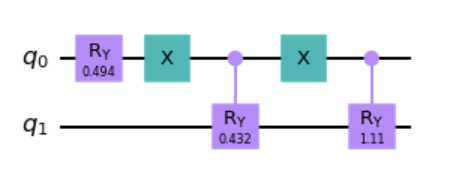
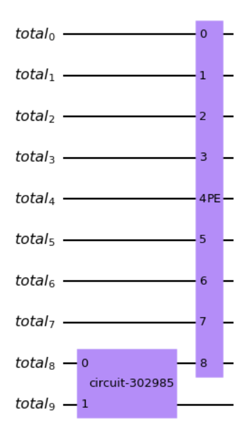
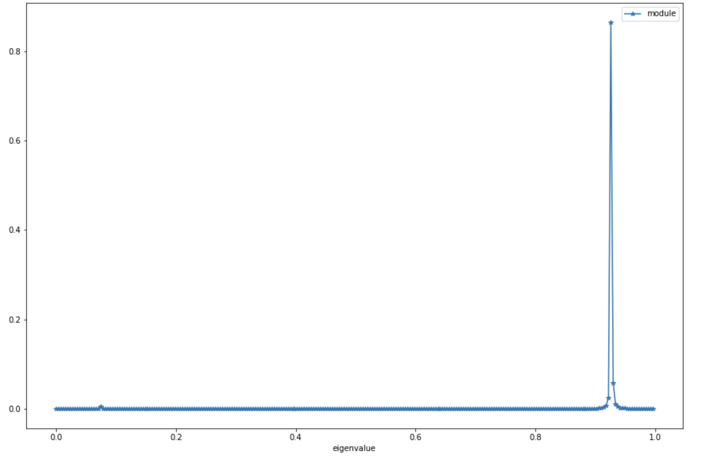

Example of QPCA usage
Example of Qpca usage.
First, you have to import the necessary modules from the package and then you can generate a random Hermitian
matrix using generate_matrix() method provided in the package. You can
set the matrix dimension and a seed for the reproducibility of the execution.
/**
*
*/
from QPCA.decomposition.Qpca import QPCA
import numpy as np
import matplotlib.pyplot as plt
import random
import pandas as pd
from QPCA.preprocessingUtilities.preprocessing_matrix_utilities import generate_matrix
matrix_dimension=2
seed=19
input_matrix=generate_matrix(matrix_dimension=matrix_dimension,seed=seed)
print(input_matrix)
======================
[[0.59 0.13]
[0.13 0.08]]
eigenvalue: 0.04912229458049476 - eigenvector: [-0.233 0.973]
eigenvalue: 0.6199503657038241 - eigenvector: [0.973 0.233]
Once you have your input matrix, you can fit your QPCA model, specifying the number of resolution qubit that you need for the phase estimation process. Remember that a higher resolution generally means better accuracy results but lower performance.
resolution=8
qpca=QPCA().fit(input_matrix,resolution=resolution,plot_qram=True,plot_pe_circuit=True)
print(np.linalg.eig(qpca.input_matrix))
======================
(array([0.92658152, 0.07341848]),
array([[ 0.9725247 , -0.23279972],
[ 0.23279972, 0.9725247 ]]))
If you set the boolean flag plot_qram and plot_pe_circuit to True as in the example before, you are able to see two plots like the ones below.
Specifically, this plot shows the circuit that implements the encoding of the input matrix in the quantum registers. As you can see, the number of qubit required to store the matrix is in the order of log(n*m), where n and m are the number of rows and columns of the input matrix.

The other plot shows the general circuit made of the encoding part plus the phase estimation operator. Notice that the number of qubits used for the phase estimation in this case are 9: 8 specified by the resolution parameter to encode the eigenvalues and 1 to encode the eigenvectors. In general, you will have the qubits specified in the resolution parameter plus half of the qubits used for the matrix encoding.

The core part of this library is the eigenvector reconstruction that you can perform using eigenvectors_reconstruction(). You can
specify, as input parameters, n_shots which is the number of measure that you
want to perform in the state vector tomography, n_repetitions which is the
number of times that you want to repeat the tomography process, and plot_peaks
if you want to plot the output of the phase estimation which represent the most valuable approximated eigenvalues.
eig=qpca.eigenvectors_reconstruction(n_shots=1000000,n_repetitions=1,plot_peaks=True)
print(eig)
======================
[(0.92578125, array([0.97252803, 0.23287312])),
(0.07421875, array([-0.23333264, 0.97138455]))]
With the boolean flag plot_peaks set to True, you can visualize a plot like the
one below, where you can see the peaks that represent the eigenvalues that phase estimation approximates with high probability.
As you can see, here the two peaks are 0.92 and 0.07 which are the two eigenvalues that you are able to
estimate with the resolution and the number of shots that you provide.

Finally, you can reconstruct the original input matrix using quantum_input_matrix_reconstruction().
rec_input_matrix=qpca.quantum_input_matrix_reconstruction()
print(rec_input_matrix)
======================
array([[0.5892648 , 0.12654384],
[0.12654384, 0.07984454]])